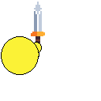

Game Dev
- Status
- archived
- Started
- September 2020
- Stack
- Godot, Aseprite
- Play
- Teaser on itch.io (desktop only)
Updates
Pausing development for now.
The artwork and animation is getting repetitive. I would love to see an AI -
(1) animate 2D models: Set the starting and end frames, define number of frames in between, and the AI figures out the smoothest animation.
(2) customize my characters: this would be very specific, but would help make quick prototypes. I believe game universes like Roblox has solved this to some extent, but within a closed platform. I want to train it with my designs and have it generate new ones, based on descriptions of characters.
Continuing the development (or solving the meta-problem of an AI) is a nice thought, but not practical for me, until I see a clear path to scaling it.
This was an incredibly good experiment - learnt aspects of game development, the math for moving characters, and basics of pixel animation. I hope to pick it up where I left off if/when the opportunity presents itself, ideally with more hands on deck. Onto other projects.
gg
Sep 24Updates
I've decided to make the game pixelated — it makes it easier to create and animate sprites.
After a few hours of tinkering in Asprite, got this sword animation working. I know close to nothing about color theory, pixel art, or even illustration in general so there's lots of learn.
The yellow sprite is similar to zombs.io game that I love.

Because it's important to have a color scheme to make the art consistent, I went color palette hunting. Found this 8 color pallete that I loved.
Also reading up on history and developing a narrative structure.
Sep 19Announcement
I'm working on historical strategy game. The barely playable prototype attached to this page is something I built using the godot engine. I did this to feel better about my chances. I wanted to get a feel for game development and mechanics — character design, asset placement, inventory etc. You'll see a plumber, a mob boss and a few assets lying around the map. Not exactly a coherent narrative.
The game (in my head) is heavily inspired by the history of Rome and battles fought with Hannibal. I'm looking to combine the multi-unit battle tactics of Rome: Total War, and the gameplay of 2-D top-down game design of .io games like zombs.io. The working title is Veni Vidi Vici.
It's a large venture and might not see the light of day, but the possibility of what it could be is very exciting. More updates coming up!